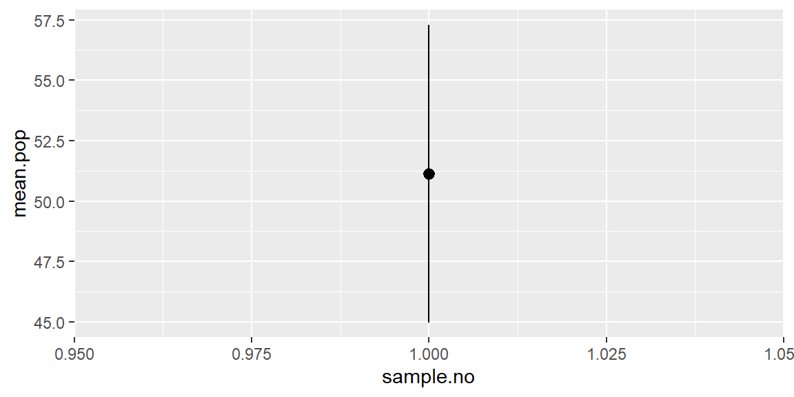

Chapter 5 Foundation of Inference
오늘 정리해볼 내용은 통계학의 핵심 중 하나인 추론(inference)의 근간이 되는 표본을 구하는 과정, 표집(sampling)을 어떻게 코딩으로 구현하는가와 관련된 것입니다. 즉, 이번 포스팅은 아래와 같은 내용을 주로 다룬다고 할 수 있습니다.
- R에서 표집 작업을 어떻게 수행하는가?
- 표집분포는 어떠한 형태를 띄는가?
- 표집분포를 어떻게 계산하는가?
이해를 돕기 위해서 사회과학 분야에서 널리 쓰는 세계발전지표(World Development Indicators, WDI)에서 변수들을 추출하여 활용해보도록 하겠습니다. 먼저 WDI를 라이브러리에서 로드해봅시다. 없으면 당연히 설치해야 겠죠?
WDI 데이터셋에서 우리는 동일한 국가들이 시간을 거듭해(over time) 갖는 반복적인 값을 갖는 것을 확인할 수 있습니다. 이때 반복이란 동일하다는 얘기가 아니라 미국 2000년의 경제성장률, 미국 2001년의 경제성장률과 같은 식으로 일종의 패널(panel)을 이룬다는 것을 의미합니다.
이러한 자료의 구조는 자료 내에 내재할 수 있는 시간적 흐름의 상관효과, 그리고 동시기의 국가(단위)들 간에 존재할 수 있는 상관효과 등을 고려해주어야 함을 의미합니다. 물론, 여기서는 추론과 추론에 필요한 표집을 살펴볼 것이기 때문에 더 자세한 내용까지는 들어가지 않을 것입니다.
WDI에서 다음과 같은 변수들을 추출해 WDI.data라는 데이터프레임에 저장해보겠습니다.
- 사망률 (mortality rate)
- 미국으로부터의 순 원조 유입 (net aid flows from US)
- 파상풍 예방주사 (newborns vaccinated for tetanus)
- 도시 지역 인구(전체 대비, urban pop %)
- 무역개방성 (수출입 총합 대비 GDP, trade % GDP)
WDI.data <-
WDI(country = "all",
indicator = c("SH.DYN.NMRT","DC.DAC.USAL.CD", "SH.VAC.TTNS.ZS",
"SP.URB.TOTL.IN.ZS", "NE.TRD.GNFS.ZS"),
start = 1990, end = 2005, extra = FALSE, cache = NULL)그리고 간단하게 자료에서 변수들의 형태를 살펴보겠습니다.
par(mfrow = c(1, 3))
# 사망률
hist(WDI.data$SH.DYN.NMRT, main = "Mortality rate")
# 원조 (원조액은 두 가지: 첫 번째는 원자료로 두 번째는 로그화한 결과)
hist(WDI.data$DC.DAC.USAL.CD, main = "Aid Raw")
hist(log(WDI.data$DC.DAC.USAL.CD+.1), main = "Logged Aid")# 파상풍 예방주사
hist(WDI.data$SH.VAC.TTNS.ZS, main = "Newborns vaccinated for tetanus")
# 도시 인구
hist(WDI.data$SP.URB.TOTL.IN.ZS, main = "Urban population rate")
# 무역개방성 (마찬가지로 원조처럼 원자료와 로그화한 자료로)
hist(WDI.data$NE.TRD.GNFS.ZS, main = "Trade openness_raw")5.1 표본을 통한 모집단 추론 (Infer Population using Samples)
이제 이 변수들의 모집단을 우리가 모른다고 가정해보겠습니다. 대신 각각의 변수들로부터 50개의 관측치들을 무작위 표본을 취한다고 생각합시다. 그리고 우리는 이 무작위 표본을 5,000번 반복하여 뽑고 그렇게 뽑힌 5,000개의 무작위 표본들의 평균 분포를 그래프로 나타내겠습니다. 우선, 사망률에 대한 무작위 표본 1개를 뽑아보고, 그 표본 이름은 samp1.mort 라고 하자.
표본 평균과 모집단 평균을 비교해보겠습니다.
## [1] 22.66397## na.rm 옵션은 표본에 결측치가 있을 수 있을 때 중요하게 사용됩니다.
## 결측치 빼고 평균을 구하란 뜻입니다.
mean(WDI.data$SH.DYN.NMRT, na.rm = TRUE) # 사망률 모집단의 평균## [1] 22.47402이제 5,000개의 표본들을 루프(loop)를 가지고 뽑아서 그 각각의 평균들을 벡터로 저장해보겠습니다. 이를 위해서 먼저 빈깡통, 빈 벡터(Blank vector)를 만들어야 합니다.
# 빈 벡터 만들기
sample_means50.mort <- rep(NA, 5000)
# 루프로 5,000개의 표본평균을 구해 저장하기
for(i in 1:5000) {
samp <- sample(WDI.data$SH.DYN.NMRT, 50)
sample_means50.mort[i] <- mean(samp, na.rm = TRUE)
}여기에서 루프의 의미는 원래 우리가 가지고 있던 WDI의 사망률 지표에서 50개씩 꺼낸 표본을 1개라고 할 때, 이와 같은 과정을 5,000번 반복하라는 것입니다. 그러면 5,000개의 표본을 얻게 되고, 이 중 당연히 결측치도 있을 수 있으므로 na.rm() 옵션으로 결측치를 제외하여 평균을 구하라고 코딩하는 것입니다.
평균을 구할 때, 요소 중에 NA (결측치)가 있으면 전체 평균 값도 NA로 계산되므로 이걸 처리해주어야 합니다. 자, 그럼 이렇게 구한 5,000개의 표본들의 평균들이 어떻게 분포되어 있는지 확인해보겠습니다. 히스토그램을 그려봅시다.: 50개의 값(values)을 가지는 5,000개의 표본평균 각각의 평균들의 분포를 플롯으로 살펴보는 것입니다.
먼저 1개의 표본평균과 모집단 평균을 비교했을 때랑 보자면, 5,000개의 표본평균들과 모집단 평균 간의 차이가 현격하게 감소한 것을 확인할 수 있습니다. 이 시뮬레이션에서 우리는 직관적으로 한 가지를 확인할 수 있습니다. 무작위라는 조건 하에서 표집을 반복할 때, 그 평균들의 평균은 모집단의 평균으로 수렴하므로 우리는 이와 같은 작업을 통해 실제로 모집단을 모르는 상황에서 표본들로 모집단의 특성을 추론할 수 있다는 것입니다.
## [1] 22.48378## [1] 22.47402이제 전체 인구 대비 도시 인구의 비율 변수를 살펴보겠습니다. 주어진 중심극한정리 (Central Limit Theorem)에 따라 우리는 오직 1개의 표본만을 취해 모집단에 대한 95%의 신뢰 구간을 계산해볼 것입니다. 이전과 마찬가지로 50개의 값을 무작위로 추출해 samp.pop 이라는 자료에 담고 이 표본을 이용하여 평균과 표준오차를 계산해보겠습니다.
samp.pop <- sample(WDI.data$SP.URB.TOTL.IN.ZS, 50)
mean.pop <- mean(samp.pop, na.rm = TRUE) # 표본의 평균
se.pop <- sd(samp.pop, na.rm = TRUE)/sqrt(length(samp.pop)) # 표준오차
# 평균을 중심으로 95%의 신뢰구간을 구해보자 (위/아래)
lower.pop <- mean.pop - (1.96 * se.pop)
upper.pop <- mean.pop + (1.96 * se.pop)
# 95% 신뢰 구간의 경계 값과 평균을 리스트 자료 유형으로 저장한다.
c(lower.pop, mean.pop, upper.pop)## [1] 44.97470 51.13463 57.29455# 평균 추정치와 신뢰구간을 그래프로 만들 수 있다.
library(tidyverse)
estimates.df <- bind_rows(tibble(lower.pop, mean.pop, upper.pop))
estimates.df$sample.no <- 1
library(ggplot2)
ggplot(data = estimates.df, aes(x = sample.no)) +
geom_pointrange(aes(y = mean.pop, ymin = lower.pop, ymax = upper.pop))
표본 1개의 평균값과 95% 신뢰구간의 경계값 (bound)을 표현한 그래프입니다.
동일한 작업을 루프를 이용하여 20개의 표본을 대상으로 하는 평균과 95% 신뢰구간의 하위/상위 경계값을 구해보겠습니다.
mean.pop.20 <- rep(NA, 20)
lower.pop.20 <- rep(NA, 20)
upper.pop.20 <- rep(NA, 20)
for(x in 1:20) {
samp.pop <- sample(WDI.data$SP.URB.TOTL.IN.ZS, 50)
mean.pop.20[x] <- mean(samp.pop, na.rm = TRUE)
lower.pop.20[x] <- mean.pop.20[x] -
(1.96 * (sd(samp.pop, na.rm = TRUE)/sqrt(length(samp.pop))))
upper.pop.20[x] <- mean.pop.20[x] +
(1.96 * (sd(samp.pop, na.rm = TRUE)/sqrt(length(samp.pop))))
}이렇게 구한 총 20개의 표본평균, 하위경계값, 상위경계값을 estimates.df.20이라는 데이터프레임에 저장하고 그래프로 나타내보겠습니다.
estimates.df.20 <- tibble(lower.pop.20, mean.pop.20,upper.pop.20)
estimates.df.20$sample.no <- c(1:20)
ggplot(data = estimates.df.20, aes(x = sample.no)) +
geom_pointrange(aes(y = mean.pop.20,
ymin = lower.pop.20,
ymax = upper.pop.20))사실 위와 같은 형태의 그래프를 제공하는 함수가 coefplot()이라고 따로 존재합니다. 요즘에는 회귀분석의 결과표만 보여주기 보다는 평균과 신뢰구간을 같이 보여줄 수 있는 회귀계수 그래프를 위와 같이 제시하는 추세입니다.
ggplot(data = estimates.df.20, aes(x = sample.no)) +
geom_pointrange(aes(y = mean.pop.20,
ymin = lower.pop.20, ymax = upper.pop.20)) +
geom_hline(data = WDI.data,
aes(yintercept = mean(SP.URB.TOTL.IN.ZS, na.rm = TRUE))) +
coord_flip() +
theme_bw() +
xlab("Sample number") + ylab("Estimates") +
ggtitle("Sample means for urban pop, with 95% confidence intervals")몇 가지 추가적인 특징들을 더 보여주기 위하여 한 가지 과정을 더해보았습니다. 먼저 95% 신뢰구간 밖에 존재하는 값들을 이탈치 (outliers)라고 할 때, 그 이탈치를 의미하는 더미변수를 하나 만들어보겠습니다. 이탈치면 1, 이탈치가 아니면 0의 값을 갖는 변수를 만들겠다는 것입니다. 95% 신뢰구간을 벗어났다는 것은 표본평균을 가지고 추론한 구간추정 범위 내에 모집단 평균이 존재하지 않는다는 것입니다.
estimates.df.20$outside <-
ifelse(estimates.df.20$lower.pop.20 >
mean(WDI.data$SP.URB.TOTL.IN.ZS, na.rm = TRUE) |
estimates.df.20$upper.pop.20 <
mean(WDI.data$SP.URB.TOTL.IN.ZS, na.rm = TRUE), 1, 0)마지막으로 표본평균 + 95% 신뢰구간이 모집단 평균을 포함하지 않는 경우에는 그래프 라인의 색을 빨간 색으로 바꾸는 코딩을 짜보겠습니다.
ggplot(data = estimates.df.20,
aes(x = sample.no, color = as.factor(outside))) +
geom_pointrange(aes(y = mean.pop.20,
ymin = lower.pop.20,
ymax = upper.pop.20)) +
geom_hline(data = WDI.data,
aes(yintercept = mean(SP.URB.TOTL.IN.ZS, na.rm = TRUE))) +
coord_flip() +
theme_bw() +
scale_color_manual(name = "", values=c("#9999CC", "#CC6666")) +
theme(legend.position="none") +
xlab("Sample number") + ylab("Estimates") +
ggtitle("Sample means for urban pop, with 95% confidence intervals")
실선이 도시 인구 비율의 모집단 평균이라고 할 때, 총 4개의 표본이 평균과 그 평균을 중심으로 한 표준오차 (95% 신뢰구간) 내에 모집단 평균을 포함하지 않는 것을 확인할 수 있습니다.
5.2 평균의 차이(difference of means), 그리고 분산분석(analysis of variance, ANOVA)
사회과학, 정량적 사회과학 연구가 추구하는 목적 중 하나는 인과관계에 관한 추론, 인과추론(causal inference)입니다. 인과관계란 어떤 현상의 생성경로를 추적하기 위한 분석구도로서 경험적으로 확증될 수 없는 논리적 관계를 의미합니다.
인과관계의 성격은 유리스틱에 따라 달리 규정되지만, 생산(producing)의 관계라는 측면에서는 견해가 일치합니다. 즉, 원인이 기능하여 결과를 생산한다는 것이죠.
- 인과관계는 감각경험을 통해 인지할 수 있는 상호독립적 단위로 구성되며, 원인과 결과는 서로 다른 현상으로 일정한 기능적 연관성 이외에 어떠한 본질적 동질성도 공유하지 않는다고 봅니다.
- 또한 경험과학적 시각에서 모든 현상의 원인과 결과 사이의 인과관계는 규칙성과 재생성을 나타냅니다.
- 이 규칙성은 잠정적인 것으로 간주되는데, 그 이유는 네 가지 맥락에서 비롯됩니다.
- 어떤 사회현상의 인과적 생성경로는 귀납적으로 추론되나, 귀납적 일반화는 귀납사례의 범주에 제한되어 조건적입니다.
- 마찬가지로 밝혀진 원인들은 충분조건 또는 필요조건에 불과합니다.
- 우리는 인과관계를 경험적으로 확인할 수는 없습니다.
- 인간의 상호작용으로 나타나는 사회현상은 가변적이므로 그들 간 인과관계도 유동적입니다.
우리는 X와 Y의 관계를 논리적으로 설정할 수 있을 때, X를 원인으로, Y를 결과로 받아들여 양자 간 인과관계를 부여합니다.
- 단, 경험과학적 사회과학연구에서는 도출된 인과관계를 일단의 가정과 선행조건이 충족되었을 경우에 한해 성립되는 개연적 관계로 받아들입니다.
- 즉, 인과관계는 언제든 변할 수 있는 경향이나 추세라는 것입니다.
인과추론에 요구되는 근거는 크게 세 가지로 구분할 수 있습니다. 첫째 시간적 순차, 둘째 항상적 연계, 셋째, 탈허위성입니다.
- 시간적 순차(time-order)
- 원인은 반드시 결과에 시간적으로 앞서야 합니다.
- 시간차(time lag)의 경험적 근거가 필요하다.
- 항상적 연계
- 어떤 현상(원인)의 변화가 다른 현상(결과)의 규칙적 변화를 지속적\(\cdot\)안정적으로 수반할 때, 이들 사이의 인과관계를 추론할 수 있습니다.
- 실제 연구과정에 있어서 항상적 연계라는 논리적 척도는 통계적 공변(statistical covariance), 함수적 상관관계(functional correlation)라는 경험적 척도로 대체됩니다.
- 예측변수와 종속변수 간의 공변규칙성이 연구의 시간적\(\cdot\)공간적 선행조건 하에서 안정적으로 나타날 때, 인과추론에 요구되는 경험적 근거를 얻을 수 있습니다.
- 그러나 공변규칙성만으로 인과관계의 존재를 단정해서는 안 됩니다(관계는 경험적 관측 불가).
- 단 항상적 연계는 인과관계의 필요조건입니다(항상적 연계 없으면 일단 인과관계도 없습니다).
- 탈허위성
- 인과관계가 허위성을 가지지 않고 진정한(genuine) 것이어야 한다는 뜻입니다.
5.2.1 평균 차이를 보는 이유
앞에서 표집을 했을 때와 유사합니다. 사실 우리가 관측한 사회현상이 모집단 그 자체의 사회현상이라고 ‘결코’ 단언할 수 없습니다. 인과성(causality)에 대한 문제는, “어떠한 현상에 대한 원인은 무엇인가?”에 답을 하기 위함입니다. 이것이야말로 사회과학에서 가장 핵심이 라고 할 수 있습니다. 과학의 정수 는 이론의 수립이며, 이론은 인과적 진술이기 때문입니다. 현상에서 보이지 않는 법칙을 발견하고, 다듬어 나가는 것이 우리 사회“과학자”들이 하는 일이라고 할 수 있습니다. 때문에 인과성(causality)은 우리의 핵심 주제일 수밖에 없습니다.
인과효과(causal effect)는 다른 요인들이 통제되었을 때, 주요 변인들이 만들어내는 결과의 차이-영향이라고 할 수 있습니다. 예를 들어, 프랑스 혁명의 인과적 효과는 프랑스 혁명이 일어나지 않았을 때의 결과와 비교해볼 때 확인할 수 있습니다. 그런데 문제는 원인이 있을 때와 없을 때를 사회과학에서는 동시에 관찰할 수가 없다는 것입니다(반사실적 사례의 관측불가능성).
이 문제가 바로 인과추론의 근본적 문제입니다. 이 문제를 해결하기 위해 우리는 두 가지 가설적 방법들을 사용하게 됩니다. 사례를 들어보겠습니다. 가설로 “재직 중인 사람이 선거에서 득표율이 높을 것이다.”라고 할 때, 종속변인은 민주당원이 갖는 득표율이며, 이를 예측하기 위한 변인은 재직 여부가 될 것입니다. 그래서 재직 중인 사람이 나갔을 때 득표율과 새롭게 나간 사람의 득표율 을 비교, 그 사이의 차이가 바로 인과 효과라고 할 수 있을 것입니다. 예측변인을 제외 한 나머지는 통제되어야 합니다—즉, 변하지 않도록 해야 한다는 것(holding constant)입니다. 이러한 통제의 대상을 어떻게 선정할 것인가는 연구를 설계하는 연구자의 역량에 따라 좌우됩니다.
위 사례에서 반사실적 조건문(counterfactuals)을 통해 우리가 얻어낼 수 있는 것이 실현된 인과 효과(realized causal effect)이다. 사회과학 연구방법론에 있어서 교과서적으로 읽히는 King, Keohane, 그리고 Verba의 1994년 저작 “Designing Social Inquiry”, 이하 KKV는 이 문제에 대해 우리는 관측가능한 효과에서 체계적인 것과 비체계적인 것을 구분해야 한다고 강조합니다.11 KKV는 우리가 체계적인 변화에 주목해야 한다고 주장합니다. 그리고 그것을 위해서 우리는 가설적인 반복을 통해 비체계적 요인들을 상쇄시키고, 체계적인 요인들만의 영향—평균적인 인과 효과를 살펴볼 수 있다는 것입니다.
사실, 우리는 우리가 관찰하는 대상 안에 오차(error)가 존재한다고 생각할 수밖에 없기 때문에, 그것을 최소화시키는(maximizing error term) 것이야말로 체계적인 변화의 요인을 추적할 수 있는 방법이 될 수 있습니다. 가설적 반복을 통해 나오는 하나의 분석단위에 대한 확률적인 인과 효과를 평균적으로 보는 것(Random Causal Effect for \(\text{unit}_i\)), 즉 평균적 인과 효과(Mean causal effect)는 체계적인 요인들이 가지고 오는 영향의 평균을 의미합니다. KKV는 이와 같이 관측된 인과 효과에서 체계적-비체계적 효과를 구분하는 것을 포함하여 인과 효과의 논의를 발전시켰습니다.
여기서 하나 더 살펴보아야 하는 것이 바로 분산입니다. 분산이란 실제로 관측된 데이터들이 평균에서 어느 정도 수준으로 흩어져 있는지를 보여주는 통계치입니다. 즉, 관측된 사회현상은 필연적으로 일정한 수준의 분산을 가지게 되는데, 이 변수 자체 분산을 고려하여, 우리가 보고자 하는 두 변수의 관계에 적용할 수 있습니다. 간단히 정리하자면, 두 변수의 평균의 차이가 두 변수의 분산 정도를 무시할 수 있을 정도로 명확하다면, 우리는 통계적으로 이 두 변수 간의 차이가 유의미하다고 볼 수 있습니다. 이에 관한 내용은 추후에 더 자세히 살펴볼 기회가 있을 것입니다.
일단 여기까지가 바로 우리가 인과추론을 이해하기 위한 기초로서 평균 차 분석의 논리를 살펴보아야 하는 이유입니다. 이론적 논의는 여기까지하고, R을 통해 실제 자료를 바탕으로 예제를 통해 구체적인 논의를 이끌어 나가보도록 하겠습니다. 오픈소스로 공개되어 있는 정부의 질(Quality of Government, 이햐 QoG) 데이터셋의 교차사례 자료(cross-section data)를 사용해보겠습니다.
5.2.2 t-검정을 이용한 두 평균의 차이
먼저 Polity 데이터를 이용해서 민주주의/비민주주의를 나타내는 이분변수(dichotomous variable)로 나타내 보겠습니다. POLITY IV 프로젝트에서 제공하는 Polity 데이터는 -10부터 +10까지 총 21개 척도로 정치체제를 구분하고 있습니다. 이러한 방식의 정치체제 측정에 대해서는 여러 가지 비판이 있고, 제 연구주제도 그 비판으로부터 시작한 것이기는 합니다만 여기에서는 구체적으로 다루지 않겠습니다.
Polity 변수는 임의로 7점 이상의 점수를 가진 국가들을 민주주의, 그리고 0 이하를 권위주의, 그리고 그 사이의 국가들은 준민주주의 또는 준권위주의로 구분한다.
## 지금 사용하는 QOG는 1개년도의 194개 국가에 대한 자료로, p_polity2의 결측치가 29개 있다.
knitr::kable(table(is.na(QOG$p_polity2)))| Var1 | Freq |
|---|---|
| FALSE | 163 |
| TRUE | 48 |
| Var1 | Freq |
|---|---|
| 0 | 84 |
| 1 | 79 |
그럼 이제 이 민주주의 변수를 자세히 들여다 보겠습니다. 우선 민주주의 국가와 비민주주의 국가 간의 1인당 GDP의 평균을 Gleditsch의 2010년 미국 달러 기준 1인당 GDP 자료를 이용해서 democracy 변수와 함께 살펴보겠습니다.
## QOG$democracy: 0
## [1] 8380.733
## ------------------------------------------------------------
## QOG$democracy: 1
## [1] 18081.99보면 민주주의일 경우 1인당 GDP가 평균 약 18,081달러, 민주주의가 아닐 경우 평균 약 8,380달러임을 확인할 수 있습니다. 이 정보를 좀 더 보기 쉽게 박스플롯으로 나타내보겠습니다.
QOG %>% drop_na(democracy) %>%
ggplot(aes(y = gle_cgdpc, x = as.factor(democracy))) +
geom_boxplot() +
labs(x = "Regime type", y = "GDPPC by constant 2010 US dollars") +
scale_x_discrete(labels=c("0" = "Non democracy", "1" = "Democracy")) +
scale_y_continuous(labels = scales::dollar_format()) +
theme(
axis.title.x = element_text(margin = margin(t = 20, b = 10)),
axis.title.y = element_text(margin = margin(r = 20, l = 20))) +
guides(fill=FALSE) + theme_bw()과연 이 두 평균의 차이가 통계적으로 유의미한지를 결정하기 위해서 t-검정을 해보고자 합니다. t-검정의 기본적인 개념은 하나의 공식으로 보면:\[ \text{t-statistics} = \frac{(\mu_A - \mu_B) - \text{(NULL: 0)}}{se_A - se_B}\] 라고 할 수 있습니다. 다시 풀어서 말하자면 집단 A와 집단 B의 차이12가 각 집단의 평균이 표집을 통해 보일 수 있는 표본 추출로 인해 발생할 수 밖에 없는 평균의 차이13에 비하여 얼마나 큰지를 보는 것입니다. 즉, 일종의 비율입니다.
더 단순하게 말하자면: 두 집단이 정말로 차이가 있을지(평균 차이)를 두 집단이 표본이기 때문에 나타날 수 있는 평균의 차이로 인한 차이(표준오차)와 비교하여 보는 것입니다. 만약 두 집단의 평균 차이가 유의미하게 평균 차이의 표준오차보다 크다면, 이 두 집단은 각 집단의 평균이 표집으로 인해 우연으로 차이가 나타났다기 보다는 정말 차이가 있기 때문에 그런 결과로 나타났을 가능성을 시사합니다.
시작할 때, 비록 민주주의의 1인당 GDP가 비민주주의와는 다를 것이다/혹은 더 높을 것이라는 단측꼬리 가설을 검증하고자 했지만, 여기서의 분석은 양측꼬리 검정(차이가 있다 없다만 보여주는)을 해보도록 하겠습니다.
## 먼저 필요한 통계치들과 표본의 크기를 구해보겠습니다.
## 먼저 평균과 표준편차가 필요합니다.
mean.dem <- mean(QOG$gle_cgdpc[QOG$democracy == 1], # 민주주의 국가들의 GDPPC 평균
na.rm = TRUE)
mean.nondem <- mean(QOG$gle_cgdpc[QOG$democracy == 0], # 비민주주의
na.rm = TRUE)
sd.dem <- sd(QOG$gle_cgdpc[QOG$democracy == 1], # 민주주의 국가들의 GDPPC SD
na.rm = TRUE)
sd.nondem <- sd(QOG$gle_cgdpc[QOG$democracy == 0], # sd: standard deviation
na.rm = TRUE)표본의 크기를 구해보겠습니다. length()는 결측치까지 포함해서 관측치의 수를 구하기 때문에 매뉴얼대로 하나하나 통계치를 구해 t 값을 구하려는 지금은 반드시 결측치를 제외하고 계산하는 옵션을 추가해주어야 합니다.
n.dem <- length(QOG$wdi_gdpcapcon2010[QOG$democracy == 1 &
is.na(QOG$democracy) == FALSE &
is.na(QOG$wdi_gdpcapcon2010) == FALSE])
n.nondem <- length(QOG$wdi_gdpcapcon2010[QOG$democracy == 0 &
is.na(QOG$democracy) == FALSE &
is.na(QOG$wdi_gdpcapcon2010) == FALSE])이번에는 두 집단의 차이에 대한 표준오차를 구해보겠습니다.
se.dnd <- sqrt((sd.dem^2 / n.dem) + (sd.nondem^2/n.nondem))
# The t statistic is calculated easily using these saved values
t <- ((mean.dem - mean.nondem) - 0) / se.dnd
t## [1] 4.03403두 집단의 평균이 다를 것이라는 대안가설(Alternative hypothesis, \(H_A\))에 대한 유의수준(p-value)는 아래와 같이 계산할 수 있습니다. 여기서는 R에 내장된 굉장히 기본적인 함수들을 조합해서 수학적 공식을 재현하는 것이기 때문에 자유도(degree of freedom)를 대략적으로 구했지만 R에 내장된 t-test 함수는 수학적으로 더 정확하게 계산할 것입니다.
대안가설(\(H_A\)): 두 집단의 평균이 다를 것이다.
## [1] 0.0001281259대안가설(\(H_A\)): 민주주의의 1인당 GDP가 비민주주의에 비하여 더 높을 것이다.
## [1] 6.406297e-05
여기서 생각해볼 문제: 왜 1에서 제외하는 방식을 사용할까? 그리고 왜 2를 곱하는 것일까?
- 1을 제외하는 이유는 R은 기본값에 따라서 자동적으로 분포에 있어서 왼쪽으로부터 확률을 계산하기 때문입니다.
- 2를 곱하는 이유는 여기서 우리는 방향성을 무시하고 두 집단의 평균 차이가 있는지 없는지의 양측꼬리 검정을 하고자 하기 때문입니다.
위에서 여러 단계에 걸쳐서 작성한 R 코드를 다음과 같이 하나의 복잡한 코드로 재구성할 수 있습니다. 다만 이런 경우에는 코드에 에러가 있을 때, 수정이 쉽지 않습니다.
t.alt <- (mean(QOG$gle_cgdpc[QOG$democracy == 1],
na.rm = TRUE) -
mean(QOG$gle_cgdpc[QOG$democracy == 0],
na.rm = TRUE) - 0) /
sqrt(
(
sd(QOG$gle_cgdpc[QOG$democracy == 1],
na.rm = TRUE)^2 /
length(QOG$gle_cgdpc[QOG$democracy == 1 &
is.na(QOG$democracy) == FALSE &
is.na(QOG$gle_cgdpc) == FALSE])
) +
(
sd(QOG$gle_cgdpc[QOG$democracy == 0],
na.rm = TRUE)^2 /
length(QOG$gle_cgdpc[QOG$democracy == 0 &
is.na(QOG$democracy) == FALSE &
is.na(QOG$gle_cgdpc) == FALSE])
)
)
t.alt## [1] 4.0827035.2.2.1 R로 할 수 있는 t-test: 두 가지 방법
- 만약 각각의 집단에 대한 서로 다른 두 데이터를 가지고 있다면 유용한 방법
##
## Welch Two Sample t-test
##
## data: QOG$gle_cgdpc[QOG$democracy == 1] and QOG$gle_cgdpc[QOG$democracy == 0]
## t = 4.0827, df = 159.85, p-value = 7.017e-05
## alternative hypothesis: true difference in means is not equal to 0
## 95 percent confidence interval:
## 5008.492 14394.022
## sample estimates:
## mean of x mean of y
## 18081.991 8380.733t.test()함수는 앞서서는 직접 제거해줘야 했던 결측치의 문제를 자동으로 처리해주는 기본값을 가지고 있습니다.
- 두 번째 방법은 두 집단이 하나의 데이터에 같이 있을 때 유용한 방법입니다.
##
## Welch Two Sample t-test
##
## data: gle_cgdpc by democracy
## t = -4.0827, df = 159.85, p-value = 7.017e-05
## alternative hypothesis: true difference in means is not equal to 0
## 95 percent confidence interval:
## -14394.022 -5008.492
## sample estimates:
## mean in group 0 mean in group 1
## 8380.733 18081.991- 역시
t.test()함수를 이용하지만 각 집단의 차이를 규정하는 변수(group identifier)가 있을 때 용이한 방법입니다.
5.2.3 분산분석(ANOVA)을 이용해 여러 평균을 비교하기
이번에는 CIRI 데이터를 이용해 국가들의 “고문”(torture) 유형에 따라서 1인당 GDP의 차이가 어떻게 나타나는지를 살펴보겠습니다. 먼저 고문의 유형을 분류해보겠습니다.
- 0은 50건 이상의 고문 사례가 있는 경우
- 1은 1건에서 49건 사이 사례를 가지는 경우
- 2는 보고된 고문 사례가 아예 없는 경우입니다.
| Var1 | Freq |
|---|---|
| 0 | 86 |
| 1 | 75 |
| 2 | 31 |
고문 유형에 따른 1인당 GDP의 분포를 그래프로 나타내 보겠습니다.
QOG %>% drop_na(ciri_tort) %>%
ggplot(aes(y = gle_cgdpc, x = as.factor(ciri_tort))) +
geom_boxplot() +
labs(x = "Torture type", y = "GDPPC by constant 2010 US dollars") +
scale_x_discrete(labels=c("0" = "Torture (+50)",
"1" = "Torture (1-49)",
"2" = "No torture")) +
scale_y_continuous(labels = scales::dollar_format()) +
theme(
axis.title.x = element_text(margin = margin(t = 20, b = 10)),
axis.title.y = element_text(margin = margin(r = 20, l = 10))) +
guides(fill=FALSE) + theme_bw()적어도 박스플롯은 세 집단의 평균에 유의미한 차이가 있을 수도 있다고 기대하게 합니다. 이제는 분산분석을 해봅시다. 이번에는 R에서 제공하는 분산분석 함수를 이용해보도록 하겠습니다.
## Df Sum Sq Mean Sq F value Pr(>F)
## as.factor(ciri_tort) 2 1.386e+10 6.932e+09 28.03 2.18e-11 ***
## Residuals 189 4.674e+10 2.473e+08
## ---
## Signif. codes: 0 '***' 0.001 '**' 0.01 '*' 0.05 '.' 0.1 ' ' 1
## 19 observations deleted due to missingness결과적으로 ANOVA의 결과는 유의수준(P-value, 여기서는 Pr(>F))의 값이 매우 작게 나와 영가설(\(H_0: \mu_1 = \mu_2 = \mu_3, \cdots, \mu_n\))이 기각된 것을 확인할 수 있습니다. 그렇다면 만약 정치체제와 고문유형별로 집단을 더 쪼개어보면 어떻게 될까요?
## 먼저, 쪼갠 집단별로 그래프를 그려보겠습니다.
boxplot(gle_cgdpc ~ ciri_tort:democracy, data = QOG) ## 콜론(:)은 상호작용을 보여줍니다.## 그런데 기본 플롯으로 그리면 x축이 가독성이 떨어집니다.
QOG %>% drop_na(ciri_tort) %>% drop_na(democracy) %>%
ggplot(aes(y=gle_cgdpc, x=as.factor(ciri_tort):as.factor(democracy),
group=interaction(democracy, ciri_tort))) + geom_boxplot() +
labs(x = "Torture X Regime type", y = "GDPPC by constant 2010 US dollars") +
scale_x_discrete(labels=c("0:0" = "Torture (+50)\nNon Democracy",
"0:1" = "Torture (+50)\nDemocracy",
"1:0" = "Torture (1-49)\nNon Democracy",
"1:1" = "Torture (1-49)\nDemocracy",
"2:0" = "No torture\nNon Democracy",
"2:1" = "No torture\nDemocracy")) +
scale_y_continuous(labels = scales::dollar_format()) +
theme(
axis.title.x = element_text(margin = margin(t = 15, b = 10)),
axis.title.y = element_text(margin = margin(r = 20, l = 10)),
axis.text.x = element_text(margin = margin(t = 10))) +
guides(fill=FALSE) + theme_bw()이렇게 두 개 유형의 조합을 분산분석하기 위해서는 마찬가지로 aov() 함수에 두 요인형 변수의 상호작용을 콜론(:)을 이용해 포함해주면 됩니다.
## Df Sum Sq Mean Sq F value
## as.factor(ciri_tort):as.factor(democracy) 5 1.851e+10 3.703e+09 26.09
## Residuals 156 2.214e+10 1.419e+08
## Pr(>F)
## as.factor(ciri_tort):as.factor(democracy) <2e-16 ***
## Residuals
## ---
## Signif. codes: 0 '***' 0.001 '**' 0.01 '*' 0.05 '.' 0.1 ' ' 1
## 49 observations deleted due to missingness단, 명심해야 할 것은 상호작용의 대상이 되는 변수들은 여기서 집단을 보여주는 요인형 변수여야 한다는 것입니다.
5.3 비율 차이: 교차표와 카이스퀘어 검정(chi-squared tests)
자료 유형에 따라서 우리가 확인해야할 통계치도 달라집니다. 예를 들어, 연속형 변수의 경우 대표값을 평균(mean)을 보면 되겠지만 이산형 변수의 경우는 비율을 볼 필요가 있습니다. 동전을 100번 던진다고 할 때, 앞면이 56번, 뒷면이 44번 나온 경우, 사실 평균인 0.56은 앞면이 나올 확률과 동일합니다. 즉, 전체 동전을 던진 횟수에 대한 성공 횟수의 비율인 것입니다.
비율 차이를 확인하고 이 차이의 통계적 유의성을 검정하는 일련의 절차를 확인하기 위하여 두 개의 연도에 걸쳐서 여러 국가들에 걸쳐 수행된 무신론에 관한 설문조사 결과를 다운로드 해보겠습니다.
here::here() %>% setwd()
download.file("http://www.openintro.org/stat/data/atheism.RData",
destfile = "atheism.RData")
load("atheism.RData")이렇게 불러온 데이터를 자세히 살펴보겠습니다.
## Rows: 88,032
## Columns: 3
## $ nationality <fct> Afghanistan, Afghanistan, Afghanistan, Afghanistan, Afg...
## $ response <fct> non-atheist, non-atheist, non-atheist, non-atheist, non...
## $ year <int> 2012, 2012, 2012, 2012, 2012, 2012, 2012, 2012, 2012, 2...nationality는 응답자의 국적을 의미하며 year는 설문조사가 시행된 연도, 마지막으로 response는 응답자가 자신이 무신론자인지 아닌지 등을 응답한 내용입니다. 그럼 응답변수만을 한 번 구체적으로 살펴보겠습니다.
| Var1 | Freq |
|---|---|
| atheist | 5498 |
| non-atheist | 82534 |
교차표를 이용해서 우리는 행과 열에 총계와 비율을 구할 수 있습니다. 이와 같은 빈도/비율표는 변수를 기술하기 위해서 유용하게 사용됩니다.
table1 <- table(atheism$response, atheism$year)
margin.table(table1, 1) %>% knitr::kable() # 행에 총계를 계산| Var1 | Freq |
|---|---|
| atheist | 5498 |
| non-atheist | 82534 |
| Var1 | Freq |
|---|---|
| 2005 | 36105 |
| 2012 | 51927 |
| 2005 | 2012 | |
|---|---|---|
| atheist | 0.3677701 | 0.6322299 |
| non-atheist | 0.4129571 | 0.5870429 |
| 2005 | 2012 | |
|---|---|---|
| atheist | 0.0560033 | 0.0669401 |
| non-atheist | 0.9439967 | 0.9330599 |
이번에는 2005년과 2012년 간 미국에서 무신론자의 비율이 변화가 있었는지를 검증해보도록 하겠습니다. 먼저, 미국의 응답자들만을 대상으로 하는 서브셋을 만들어보겠습니다.
이렇게 만든 us라는 서브셋을 가지고 카이스퀘어 검정을 해보고자 합니다.
##
## 2-sample test for equality of proportions without continuity
## correction
##
## data: table(us$year, us$response)
## X-squared = 27.49, df = 1, p-value = 1.579e-07
## alternative hypothesis: two.sided
## 95 percent confidence interval:
## -0.05474042 -0.02509990
## sample estimates:
## prop 1 prop 2
## 0.00998004 0.04990020위에서 중요한 것이 바로 변수의 순서입니다. 어떤 기준별로 특정 변수를 볼 것인가에 따라 그 기준이 될 변수가 앞으로 가고, 분석의 대상이 될 변수가 뒤로 가는 것입니다. 예를 들어, 위의 us 데이터에서 year와 response의 위치를 바꾸어 보겠습니다.
##
## 2-sample test for equality of proportions without continuity
## correction
##
## data: table(us$response, us$year)
## X-squared = 27.49, df = 1, p-value = 1.579e-07
## alternative hypothesis: two.sided
## 95 percent confidence interval:
## -0.4405031 -0.2467397
## sample estimates:
## prop 1 prop 2
## 0.1666667 0.5102881첫 번째 코드가 두 개의 연도(2005, 2012) 별로 무신론자에 대한 응답 비율을 비교한 것이었다면, 두 번째는 무신론자냐 비무신론자냐에 따라 연도들의 비율을 비교한 결과입니다. 둘 다 두 개 집단만 가지고 있는 변수라 얼핏 비슷해 보이지만 신뢰구간과 표본 추정치(sample estimates)를 보면 다른 것을 확인할 수 있습니다.
그리고 한 가지 더 명심해야할 것은 R은 여러 줄의 코드를 중첩하여 사용하는 것도 가능하다는 것입니다. 예를 들어, 위의 코드는 아래와 같이 쓸 수도 있습니다.
ustab <- table(us$year, us$response) # 아예 교차표를 먼저 저장합니다.
prop.test(ustab, correct = FALSE) # 그리고 prop.test를 저장된 교차표로 시행합니다.##
## 2-sample test for equality of proportions without continuity
## correction
##
## data: ustab
## X-squared = 27.49, df = 1, p-value = 1.579e-07
## alternative hypothesis: two.sided
## 95 percent confidence interval:
## -0.05474042 -0.02509990
## sample estimates:
## prop 1 prop 2
## 0.00998004 0.04990020# R은 때로는 중첩해서 하나의 코드에 여러 기능이 가능하게끔 하기도 합니다.
prop.test(table(atheism$year[atheism$nationality ==
"United States"],
atheism$response[atheism$nationality ==
"United States"]),
correct = FALSE)##
## 2-sample test for equality of proportions without continuity
## correction
##
## data: table(atheism$year[atheism$nationality == "United States"], atheism$response[atheism$nationality == "United States"])
## X-squared = 27.49, df = 1, p-value = 1.579e-07
## alternative hypothesis: two.sided
## 95 percent confidence interval:
## -0.05474042 -0.02509990
## sample estimates:
## prop 1 prop 2
## 0.00998004 0.04990020자, 이번에는 2012년 미국 총선의 시계열 설문조사에서 자료를 사용해보도록 하겠습니다. 여기 깃허브에서도 제공하고 있습니다. 다운받았다고 생각하고 진행하겠습니다.
anes <- pick("example.data/anes_timeseries_2012_Stata12.dta")
## 데이터가 꽤 규모가 있습니다. 2249개의 변수를 가지고 5914개의 관측치가 있습니다.
## 따라서 이렇게 큰 데이터를 사용하기 전에는 코드북을 숙지하여 어떤 변수가
## 어떤 것을 측정하고 있는지를 미리 파악해 두셔야 합니다.이렇게 불러온 ANES 자료에서 xtabs() 함수를 이용하여 정당 ID와 2012년에 대통령 후부 누구에게 투표했는지를 보여주는 변수 간의 교차표를 살펴보도록 하겠습니다.
| -9 | -6 | -2 | 1 | 2 | 5 | |
|---|---|---|---|---|---|---|
| -2 | 5 | 0 | 8 | 7 | 4 | 0 |
| 1 | 7 | 0 | 239 | 1219 | 15 | 5 |
| 2 | 8 | 0 | 250 | 519 | 86 | 8 |
| 3 | 1 | 0 | 241 | 451 | 35 | 19 |
| 4 | 20 | 0 | 390 | 174 | 157 | 51 |
| 5 | 3 | 0 | 161 | 47 | 381 | 18 |
| 6 | 3 | 0 | 157 | 61 | 387 | 15 |
| 7 | 5 | 1 | 109 | 18 | 627 | 2 |
## xtabs()는 만약 두 개 이상 변수들에 대해 살펴보고 싶을 때 유용한 함수입니다.
table(anes$pid_x, anes$presvote2012_x) %>% knitr::kable() | -9 | -6 | -2 | 1 | 2 | 5 | |
|---|---|---|---|---|---|---|
| -2 | 5 | 0 | 8 | 7 | 4 | 0 |
| 1 | 7 | 0 | 239 | 1219 | 15 | 5 |
| 2 | 8 | 0 | 250 | 519 | 86 | 8 |
| 3 | 1 | 0 | 241 | 451 | 35 | 19 |
| 4 | 20 | 0 | 390 | 174 | 157 | 51 |
| 5 | 3 | 0 | 161 | 47 | 381 | 18 |
| 6 | 3 | 0 | 157 | 61 | 387 | 15 |
| 7 | 5 | 1 | 109 | 18 | 627 | 2 |
만약 정당 ID와 투표 선택 간 독립성을 보기 위하여 카이스퀘어 검정을 하고 싶다고 한다면, 결측치의 문제를 고려해주어야 합니다. 결측치를 제거하지 않으면 원하는 결과를 얻을 수가 없기 때문입니다. 그럼 결측치를 확인하고 이를 제거하는 작업을 진행하겠습니다.
| Var1 | Freq |
|---|---|
| -2 | 24 |
| 1 | 1485 |
| 2 | 871 |
| 3 | 747 |
| 4 | 792 |
| 5 | 610 |
| 6 | 623 |
| 7 | 762 |
| Var1 | Freq |
|---|---|
| -9 | 52 |
| -6 | 1 |
| -2 | 1555 |
| 1 | 2496 |
| 2 | 1692 |
| 5 | 118 |
# 결측치를 제거한 데이터 서브셋을 만들기
anes.nomissing <- anes %>%
dplyr::filter(!pid_x %in% c(-2) &
!presvote2012_x %in% c(-9, -6, -2))
table(anes.nomissing$pid_x) %>% knitr::kable()| Var1 | Freq |
|---|---|
| 1 | 1239 |
| 2 | 613 |
| 3 | 505 |
| 4 | 382 |
| 5 | 446 |
| 6 | 463 |
| 7 | 647 |
| Var1 | Freq |
|---|---|
| 1 | 2489 |
| 2 | 1688 |
| 5 | 118 |
이제 각각의 변수를 요인형으로 지정해주고, 필요한 경우에는 레이블도 씌워줍니다.
anes.nomissing$pid_x <- factor(anes.nomissing$pid_x)
anes.nomissing$presvote2012_x <-
factor(anes.nomissing$presvote2012_x,
labels = c("Obama", "Romney", "Other"))
## 이제 제거한 결측치의 레이블도 없습니다.
## 아까의 경우 결측치를 제거해 내용물은 없지만 결측치임을 보여주었던 라벨은
## 남아있었습니다. 이제는 지정한 레이블만 남습니다.
table(anes.nomissing$pid_x) %>% t() %>% knitr::kable()| 1 | 2 | 3 | 4 | 5 | 6 | 7 |
|---|---|---|---|---|---|---|
| 1239 | 613 | 505 | 382 | 446 | 463 | 647 |
| Var1 | Freq |
|---|---|
| Obama | 2489 |
| Romney | 1688 |
| Other | 118 |
## 결측치가 없는 상태로 다시 한 번 교차표를 보겠습니다.
xtabs( ~ pid_x + presvote2012_x, data = anes.nomissing) %>% knitr::kable()| Obama | Romney | Other |
|---|---|---|
| 1219 | 15 | 5 |
| 519 | 86 | 8 |
| 451 | 35 | 19 |
| 174 | 157 | 51 |
| 47 | 381 | 18 |
| 61 | 387 | 15 |
| 18 | 627 | 2 |
## 카이스퀘어 검정은 xtabs() 결과에 적용할 수 있습니다.
## 단, 변수가 두 개 이상일 경우 카이스퀘어는 작동하지 않습니다.
chisq.test(xtabs( ~ pid_x + presvote2012_x, data = anes.nomissing)) ##
## Pearson's Chi-squared test
##
## data: xtabs(~pid_x + presvote2012_x, data = anes.nomissing)
## X-squared = 3109.4, df = 12, p-value < 2.2e-16## 카이스퀘어 검정을 하는 또 다른 방법입니다.
model1 <- xtabs( ~ pid_x + presvote2012_x, data = anes.nomissing)
chisq.test(model1)##
## Pearson's Chi-squared test
##
## data: model1
## X-squared = 3109.4, df = 12, p-value < 2.2e-16여기서는 개인 수준의 자료를 이용하여 교차표를 만들었습니다. 교차표를 하나의 데이터로 만들어 사용할 수도 있습니다.
premade.table <- as_tibble(as.data.frame(table(anes.nomissing$pid_x,
anes.nomissing$presvote2012_x)))
# Examine summary table
premade.table## # A tibble: 21 x 3
## Var1 Var2 Freq
## <fct> <fct> <int>
## 1 1 Obama 1219
## 2 2 Obama 519
## 3 3 Obama 451
## 4 4 Obama 174
## 5 5 Obama 47
## 6 6 Obama 61
## 7 7 Obama 18
## 8 1 Romney 15
## 9 2 Romney 86
## 10 3 Romney 35
## # ... with 11 more rows이렇게 만든 데이터 premade를 사용하여 변수들의 빈도를 계산할 수도 있고, 혹은 가중치 옵션을 반영해서 교차표를 만들 수도 있습니다. 이러한 xtabs()로 만든 교차표로 카이스퀘어 검정을 수행할 수 있습니다.
## Var2
## Var1 Obama Romney Other
## 1 1219 15 5
## 2 519 86 8
## 3 451 35 19
## 4 174 157 51
## 5 47 381 18
## 6 61 387 15
## 7 18 627 2## presvote2012_x
## pid_x Obama Romney Other
## 1 926.946 11.628 6.510
## 2 522.260 93.914 12.367
## 3 423.043 41.112 16.395
## 4 171.191 148.613 53.815
## 5 44.152 434.307 26.494
## 6 61.747 440.799 12.570
## 7 19.725 705.899 2.815##
## Pearson's Chi-squared test
##
## data: xtabs(weight_full ~ pid_x + presvote2012_x, data = anes.nomissing)
## X-squared = 2993.8, df = 12, p-value < 2.2e-16King, Gary, Robert Keohane, and Sidney Verba. 1994. Designing Social Inquiry. Princeton: Princeton University Press.↩︎
엄밀하게 말하면 두 집단의 평균 차이에서 0을 또 빼기 때문에 두 집단의 차이와 0이 다른지 여부를 보는 것이다.↩︎
표준오차는 여러 번 표본들 하나의 모집단으로 뽑았을 때, 그 각 표본의 평균들 간의 표준편차를 의미한다. 따라서 모집단에서 표본을 뽑음으로써 필연적으로 발생할 수밖에 없는 표본들의 평균의 차이들의 평균을 의미한다.↩︎